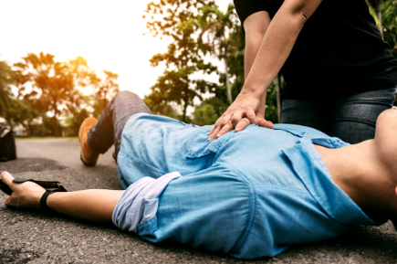

←
ملخص
-
الإسعافات الأولية هي الإجراءات التي يقوم بها الأشخاص العاديون لمساعدة شخص تعرض لحادث.
-
لتقييم ما إذا كان الشخص يعاني من سكتة قلبية، يجب إجراء فحوصات الوعي والتنفس .
-
عند اتصالك بالرقم 112، سيقدم لك عامل الطوارئ النصيحة والدعم.
-
وبمساعدة ضغطات الصدر ، والتنفس الاصطناعي ، والصدمة المبكرة من جهاز مزيل الرجفان، تزداد فرصة البقاء على قيد الحياة بمقدار 2-4 مرات.
-
تنقذ عملية الإنعاش القلبي الرئوي آلاف الأرواح في السويد كل عام .
-
30:2 يتم إجراء ضغطات الصدر والتهوية بتسلسل
-
يمكنك مساعدة الشخص الذي يعاني من توقف التنفس الشديد عن طريق إعطاء ضربات على الظهر ودفعات في البطن .
-
يشير اختصار L-ABC إلى حالة تهدد الحياة، التنفس، النزيف، فشل الدورة الدموية ويصف الترتيب الذي يجب أن تتصرف به في حالة وقوع حادث.
-
يجب وضع الشخص فاقد الوعي في وضع جانبي مستقر ، مما يوفر مجرى هواء مفتوحًا ويقلل من خطر الاختناق.
-
ولإيقاف النزيف يتم علاجها بالضغط والرفع .

→